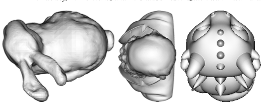

|
Bio
Makani Buckley is an Undergraduate Researcher with the CDUX group at the University of Oregon. His research interests include scientific visualization, parallel rendering, and performance-portable algorithms for GPUs. Publications
 |